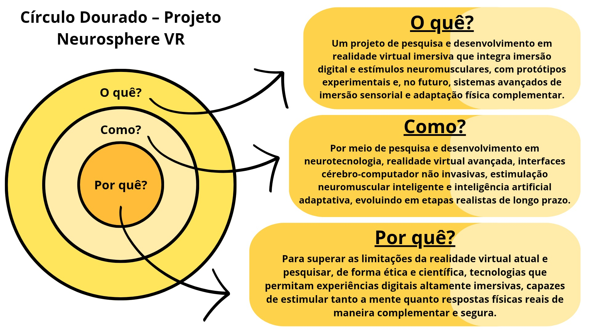
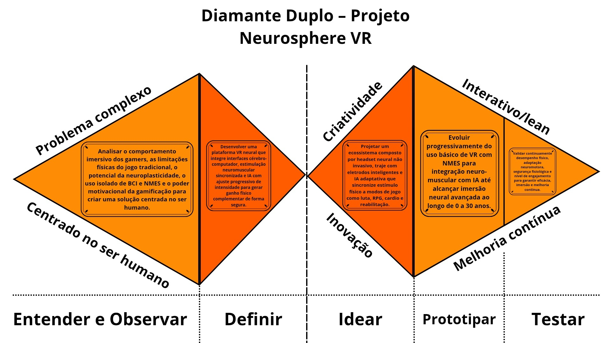
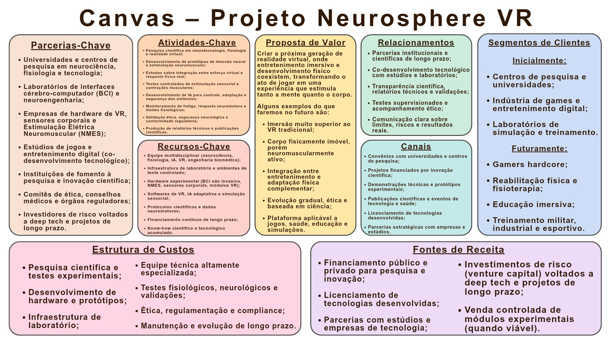

Recursos Visuais Utilizados para o Planejamento
Círculo Dourado (Golden Circle)
O Golden Circle (Círculo Dourado) é um conceito de liderança e comunicação criado por Simon Sinek que organiza estratégias de dentro para fora: Porquê (propósito), Como (processo) e O quê (produto). Simon Sinek argumenta que pessoas tendem a se conectar primeiro com o propósito de uma organização, e não apenas com seus produtos ou serviços.

Diamante Duplo (Double Diamond)
O "Diamante Duplo" (Double Diamond) é uma representação visual do processo de design e inovação, popularizado pelo Design Council do Reino Unido em 2004, que estrutura a abordagem do design thinking em quatro fases — Descobrir (Entender e Observar), Definir, Desenvolver (Idear) e Entregar (Prototipar e Testar) — para ajudar a solucionar problemas complexos e desenvolver ideias criativas e inovadoras.
A metodologia é dividida em dois diamantes que representam fases de divergência (explorar amplamente um problema) e convergência (focar em uma solução), garantindo que o problema descoberto seja resolvido antes de desenvolver uma solução eficaz.

Business Model Canvas (BMC)
O Canvas (ou também conhecido como Business Model Canvas - BMC) é uma ferramenta de planejamento estratégico visual, composta por nove blocos, que permite esboçar e estruturar modelos de negócios de forma ágil, simples e colaborativa, ideal para inovações e validação de ideias. Desenvolvido por Alexander Osterwalder, ele foca nos pilares essenciais: clientes, proposta de valor, infraestrutura e viabilidade financeira, sem a complexidade de um plano de negócios tradicional.

Motivo de eu não ter colocado direto as imagens
Caro professor Maçaneiro, tive de colocar o Link das imagens do Drive pois, quando eu redimensionava as imagens para o tmanho correto de um site elas ficaram ilegíveis (viravam literalmente pixels), então espero que você entenda o motivo de eu ter feito desta forma.